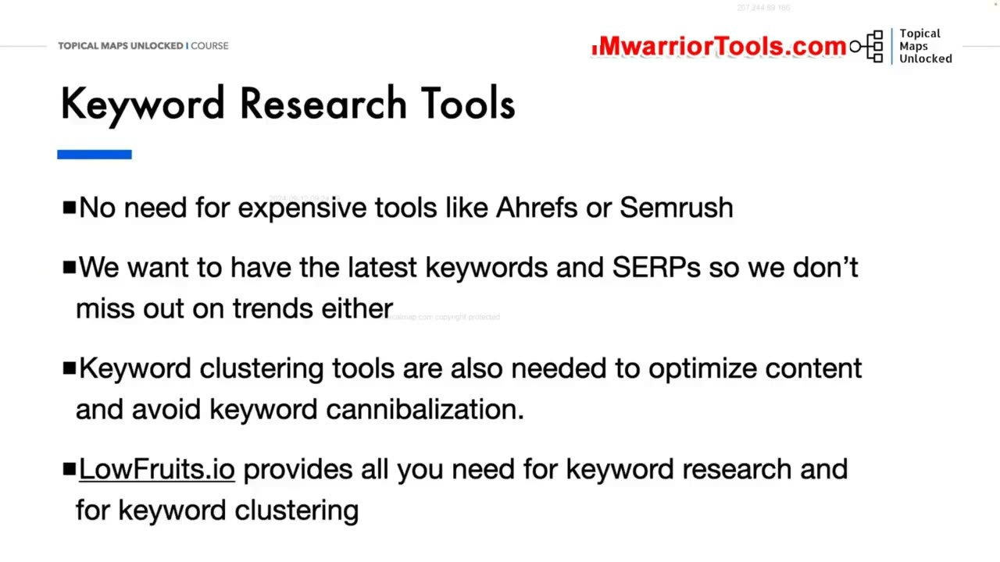
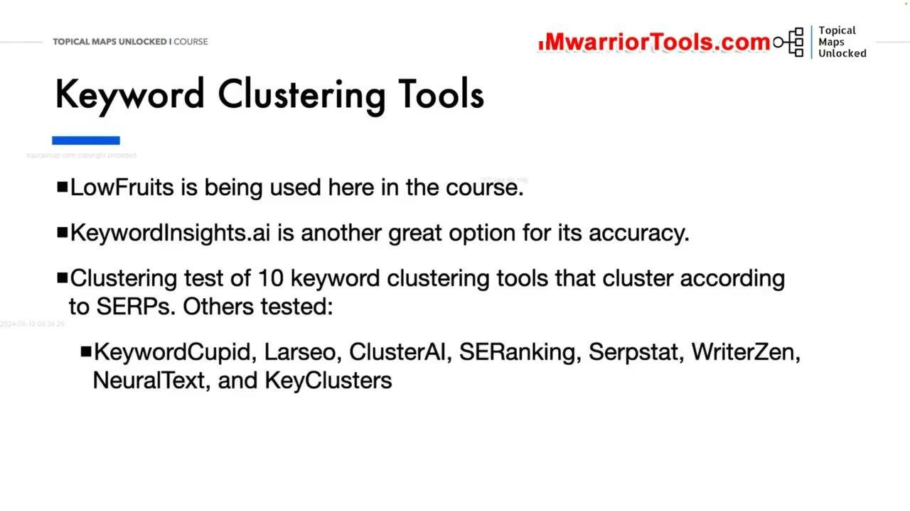
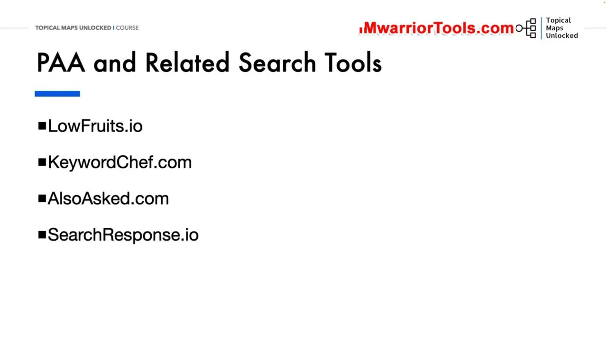
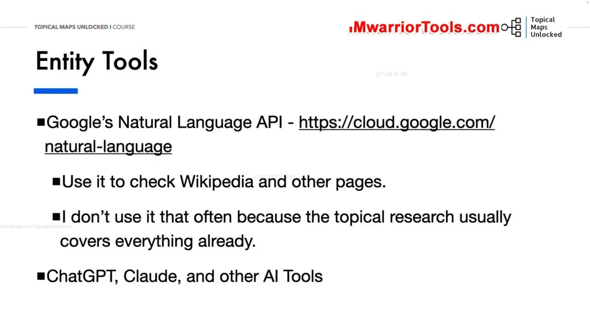
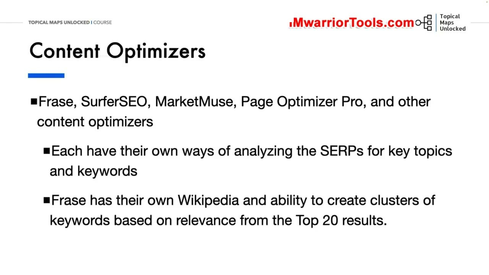
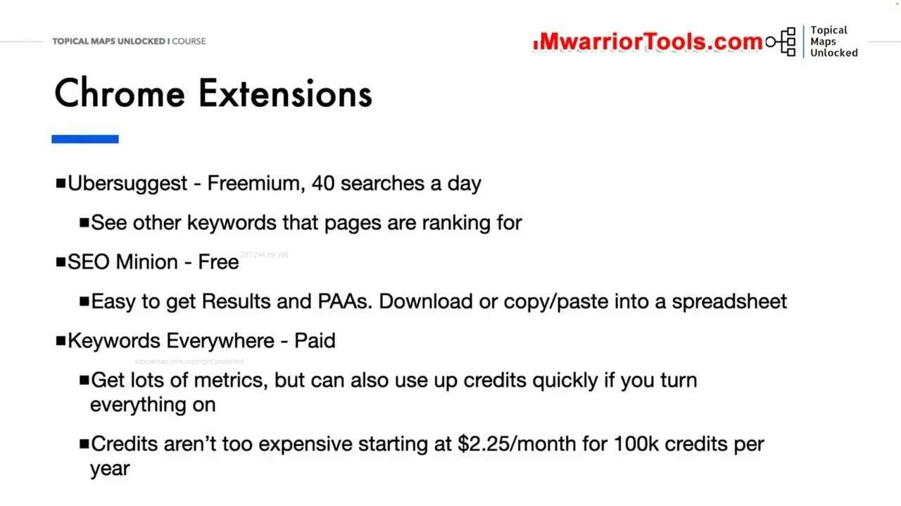
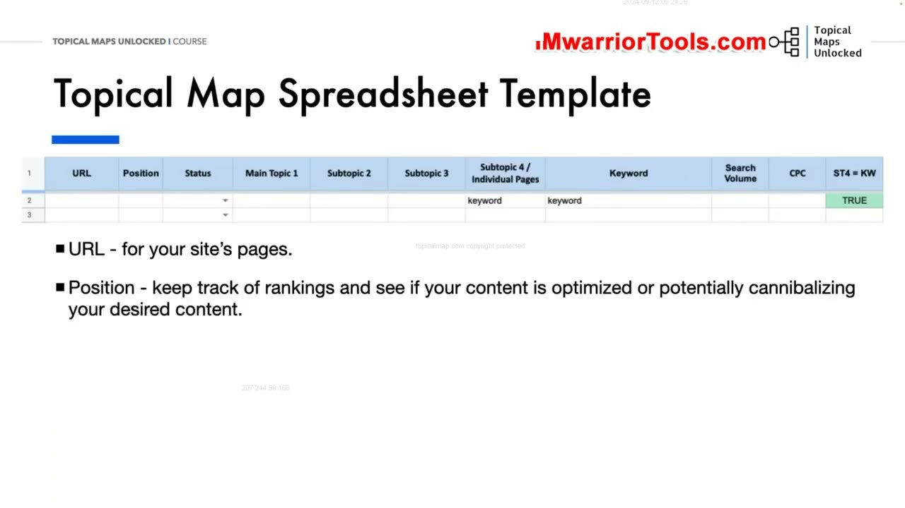
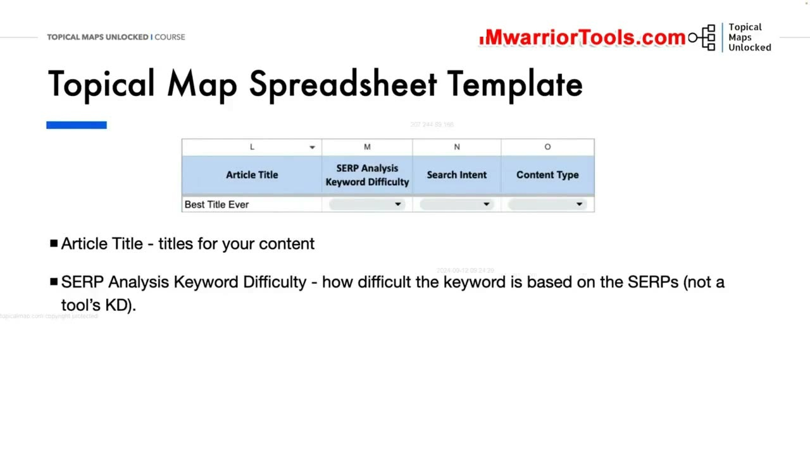

Keyword Research Tools to Use
1. Triết lý công cụ: Giảm thiểu chi phí cố định và Tiếp cận dữ liệu SERP theo thời gian thực
Trong bài học này, chúng ta sẽ đi sâu vào các công cụ nghiên cứu từ khóa mà chúng ta đang sử dụng trong thực tế, cũng như những công cụ phổ biến ngoài kia mà chúng ta chủ động không sử dụng. Khi nói đến nghiên cứu từ khóa, hai cái tên khổng lồ xuất hiện đầu tiên trong tâm trí mọi người luôn là Ahrefs và Semrush. Tuy nhiên, chúng hoàn toàn không phải là những công cụ có chi phí dễ chịu đối với phần lớn người làm web độc lập hoặc các doanh nghiệp vừa và nhỏ.
Điều chúng ta thực sự tìm kiếm là một giải pháp hợp lý hơn rất nhiều dưới góc độ chi phí thuê bao hàng tháng, đồng thời sở hữu tính linh hoạt cao với cơ chế mua credit khi có nhu cầu sử dụng đột biến trong các đợt nghiên cứu cao điểm. Bên cạnh yếu tố chi phí, một yêu cầu kỹ thuật tối quan trọng khác là chúng ta bắt buộc phải có được dữ liệu từ khóa và kết quả SERP mới nhất theo thời gian thực.
Ahrefs và Semrush sở hữu những cơ sở dữ liệu từ khóa vô cùng đồ sộ, nhưng chính vì cơ sở dữ liệu của họ quá khổng lồ nên họ không thể cập nhật toàn bộ hàng tỷ từ khóa hàng ngày được. Họ bắt buộc phải ưu tiên tài nguyên máy chủ cho các từ khóa có lượng tìm kiếm lớn. Vấn đề nan giải mà Yoyao phát hiện là có rất nhiều từ khóa ngách với SERP thực tế không hề được hai công cụ này cập nhật trong suốt hơn một tháng trời, bởi vì chúng bị coi là không có đủ lưu lượng để tiêu tốn tài nguyên tính toán của họ!
Đó chính là lý do vì sao các công cụ quét tự động như People Also Ask (PAA) và Google Autocomplete lại trở nên vô cùng phổ biến: Chúng quét trực tiếp dữ liệu mới nhất từ chính Google - công cụ tìm kiếm được sử dụng nhiều nhất hành tinh. Chúng ta cũng cần các công cụ phân cụm từ khóa có khả năng cào SERP mới nhất và gom nhóm những từ khóa có chung kết quả tương đồng. Thông thường, một tỷ lệ 4 trong số 10 kết quả hàng đầu (tức 40% tương đồng trên SERP) là tiêu chuẩn vàng để quyết định gộp bài.
Đối với mục tiêu xây dựng bản đồ chủ đề của chúng ta, LowFruits.io chính là giải pháp nghiên cứu và phân cụm tất cả trong một hoàn hảo nhất. Nó cung cấp cho bạn những từ khóa liên quan mới nhất và tạo ra các cụm từ khóa chuẩn xác. Tuy nhiên, Yoyao luôn nhấn mạnh một điều cốt tử: Công cụ quan trọng nhất và quyền năng nhất mà bạn sở hữu không phải là bất kỳ phần mềm nào, mà chính là bộ não và tư duy chiến lược của chính bạn!

2. Thử nghiệm so sánh 10 công cụ Gom cụm từ khóa: LowFruits và Keyword Insights dẫn đầu
Khi nói về các công cụ phân cụm từ khóa dựa trên SERP, Yoyao đã trực tiếp tiến hành một bài kiểm tra thực nghiệm quy mô lớn để so sánh 10 công cụ hàng đầu trên thị trường hiện nay: LowFruits.io, KeywordInsights.ai, KeywordCupid, Larseo, ClusterAI, SERanking, Serpstat, WriterZen, NeuralText và KeyClusters.
Bài kiểm tra được thiết kế bằng việc đưa vào phân cụm đồng thời 1.000 từ khóa thực tế, bao gồm cả những cụm từ khóa lớn dung lượng cao lẫn các từ khóa ngách nhỏ. Kết quả đánh giá độc lập chỉ ra rằng:
- LowFruits.io và KeywordInsights.ai là hai công cụ xuất sắc nhất, nổi bật với độ chính xác cao nhất và trải nghiệm người dùng vượt trội hoàn toàn so với phần còn lại. Độ chính xác của hai công cụ này là hoàn toàn tương đương nhau.
- Điểm khác biệt cốt lõi: LowFruits lấy dữ liệu từ khóa mới nhất trực tiếp từ Google SERP và cho phép bạn tìm kiếm từ khóa hạt giống hoàn toàn miễn phí, chỉ trừ credit khi bạn yêu cầu cào dữ liệu sâu; trong khi Keyword Insights lấy từ cơ sở dữ liệu riêng và yêu cầu trả phí theo từng lượt tìm kiếm. Keyword Insights có thêm tính năng tự động tạo bản tóm tắt nội dung (Content Briefs) rất hữu ích cho các agency.
- Các công cụ còn lại trong bài thử nghiệm bộc lộ nhiều nhược điểm nghiêm trọng: Một số công cụ phân cụm hoàn toàn thiếu chính xác. Nhiều công cụ không thể xử lý được các cụm từ khóa lớn, dẫn đến việc chúng tự ý xé nhỏ dữ liệu thành các cụm nhỏ chồng chéo lên nhau. Hậu quả là bạn sẽ phải tốn hàng giờ đồng hồ rà soát thủ công để gộp chúng lại, nếu không trang web của bạn sẽ rơi thẳng vào cái bẫy ăn thịt từ khóa (Keyword cannibalization) cực kỳ nguy hiểm.
Mức giá giữa các công cụ rất khác nhau, thậm chí có những bên bán gói trọn đời (lifetime deals). Nhưng câu hỏi lớn nhất bạn cần tự đặt ra là: Bạn muốn bỏ ra bao nhiêu công sức làm thủ công để dọn dẹp dữ liệu rác?

3. Đánh giá các công cụ khai thác Câu hỏi PAA và Tìm kiếm liên quan
Khi nói đến việc khai thác các câu hỏi People Also Ask (PAA) và các cụm tìm kiếm liên quan (Related Searches), thị trường hiện nay có rất nhiều lựa chọn phong phú. Điểm chung của chúng là đều cào trực tiếp trang kết quả tìm kiếm của Google để thu thập từ khóa, nhưng mỗi công cụ lại phục vụ một mục đích chuyên biệt:
- LowFruits.io: Quét toàn diện tính năng Google Autocomplete và PAA, làm nổi bật ngay lập tức các điểm yếu trên SERP và tự động gom cụm từ khóa dựa trên mức độ tương đồng kết quả. Cách tiếp cận này mang lại cho bạn những từ khóa liên quan mới nhất, không chỉ giới hạn ở các từ khóa đuôi dài truyền thống.
- KeywordChef.com: Đây là một công cụ rất tốt để tìm kiếm từ khóa có chủ đích của người dùng. Tuy nhiên, theo đánh giá cá nhân của Yoyao, giao diện của họ chưa thực sự thân thiện và tối ưu khi cần thao tác gom cụm dữ liệu quy mô lớn.
- AlsoAsked.com: Một công cụ cực kỳ hữu ích với tính năng Mind Map trực quan, hiển thị cấu trúc cây câu hỏi PAA phân nhánh theo từng tầng bậc sâu. Mặc dù giao diện phân nhánh rất đẹp mắt, nhưng sơ đồ này phản ánh chuỗi câu hỏi của người dùng hơn là phục vụ trực tiếp cho việc xây dựng kiến trúc phân cấp thư mục website.
- SearchResponse.io: Một giải pháp thú vị khác cho phép bạn tra cứu ngược xem một đường dẫn URL cụ thể đang xuất hiện bên trong những câu hỏi PAA nào khác trên toàn bộ Google, tuy nhiên công cụ này không tích hợp tính năng gom cụm từ khóa.

4. Phân tích Thực thể bằng Google Cloud Natural Language API Demo
Khi nói đến việc tìm kiếm các Thực thể (Entities) trên một trang web, thật khó có công cụ nào vượt qua được chính Google Cloud Natural Language API của chính Google.
Yoyao hướng dẫn cách khai thác công cụ demo hoàn toàn miễn phí này tại địa chỉ https://cloud.google.com/natural-language:
- Giao diện demo trên nền web không chấp nhận dán trực tiếp đường dẫn URL, nhưng bạn chỉ cần sao chép toàn bộ văn bản bài viết của đối thủ hoặc trang bài viết trên Wikipedia và dán thẳng vào ô kiểm tra.
- Nếu bạn biết một chút về lập trình hoặc tự động hóa, bạn có thể viết một đoạn mã script đơn giản để cào nội dung từ danh sách URL và gửi qua API này.
- API của Google sẽ lập tức trả về các chỉ số phân tích chuyên sâu: Điểm thực thể (Entities), loại thực thể (người, địa điểm, sự vật, tổ chức), điểm tình cảm (Sentiment score) và các danh mục phân loại chủ đề (Categories) mà nội dung đó thuộc về.
Yoyao chia sẻ rằng ông thường sử dụng công cụ này để kiểm tra chéo các trang Wikipedia nhằm đảm bảo không bỏ sót bất kỳ thực thể cốt lõi nào. Bên cạnh đó, bạn cũng có thể tận dụng ChatGPT để yêu cầu AI rà soát bản nghiên cứu chủ đề của mình và tìm kiếm các khoảng trống thực thể (Entity gaps). Tuy nhiên, việc nghiên cứu thủ công có phương pháp vẫn luôn mang lại sự bao quát đầy đủ và chuẩn xác nhất.

5. Các phần mềm tối ưu hóa nội dung On-page: Frase, SurferSEO, MarketMuse, Page Optimizer Pro
Các công cụ tối ưu hóa nội dung (Content Optimization Tools) cũng là một nguồn tài nguyên tuyệt vời để khai thác thêm từ khóa và chủ đề phụ. Yoyao cho biết ông đã từng trải nghiệm và sử dụng tất cả các công cụ hàng đầu hiện nay: Frase, SurferSEO, MarketMuse và Page Optimizer Pro (POP).
Nhận xét chi tiết của Yoyao về từng công cụ:
- MarketMuse: Là công cụ toàn diện và sâu sắc nhất khi hiển thị danh sách từ khóa và chủ đề phong phú, bởi vì họ quét số lượng trang SERP lớn nhất. Tuy nhiên, nó cũng rất phức tạp, khó sử dụng và đôi khi cung cấp quá nhiều dữ liệu thừa. Nhiều từ khóa mà MarketMuse gợi ý thực chất lại phù hợp để viết thành một bài viết riêng biệt khác hơn là cố nhồi nhét vào bài viết hiện tại.
- Frase.io: Là công cụ cá nhân Yoyao rất yêu thích và tự sử dụng thường xuyên. Frase cho phép tìm kiếm nhanh các trang Wikipedia liên quan ngay trong giao diện, hiển thị tài liệu tham khảo dễ đọc và tự động nhóm các từ khóa gợi ý theo từng cụm chủ đề phụ ngữ nghĩa (như giống chó, kích thước, đặc điểm hình thái...). Cần lưu ý rằng các cụm này được nhóm theo ngữ nghĩa chứ không phải phân cụm theo SERP, nên bạn không dùng nó để thay thế công cụ gom cụm từ khóa được.
- SurferSEO và Page Optimizer Pro: Phân tích Top 20 kết quả hàng đầu để đưa ra khuyến nghị về mật độ từ khóa và cấu trúc thẻ tiêu đề giúp bài viết tối ưu On-page chuẩn xác.

6. Bộ ba tiện ích mở rộng Chrome đắc lực: Ubersuggest, SEO Minion và Keywords Everywhere
Về các tiện ích mở rộng trên trình duyệt Chrome phục vụ cho việc tra cứu nhanh hàng ngày, Yoyao chia sẻ những công cụ thực chiến nhất:
- Ubersuggest Chrome Extension: Hoạt động theo mô hình freemium với 40 lượt tìm kiếm miễn phí mỗi ngày. Nó cho phép bạn nhìn thấy ngay các từ khóa khác mà trang web đang xếp hạng khi bạn lướt web. Nhược điểm là bạn sẽ nhanh chóng dùng hết 40 lượt nếu nghiên cứu nhiều, vì vậy bạn nên chủ động bật tắt tiện ích khi thực sự cần.
- SEO Minion: Một tiện ích mở rộng miễn phí cực kỳ tiện lợi giúp bạn tải xuống toàn bộ kết quả SERP, sao chép nhanh URL, tiêu đề trang và trích xuất danh sách câu hỏi PAA trực tiếp vào bảng tính một cách nhẹ nhàng.
- Keywords Everywhere: Đây là công cụ trả phí giá rất rẻ hoạt động theo cơ chế mua credit (gói Bronze chỉ từ vài đô la mỗi tháng cho 100.000 credit). Nó hiển thị trực tiếp chỉ số khối lượng tìm kiếm (Search Volume), giá thầu CPC và xu hướng tìm kiếm ngay bên dưới thanh tìm kiếm Google. Hiện tại Yoyao đang sử dụng Keywords Everywhere làm công cụ tra cứu chính thay cho Ubersuggest.
- MozBar: Tiện ích mở rộng miễn phí cung cấp nhanh chỉ số độ uy tín tên miền (Domain Authority - DA) ngay trên kết quả tìm kiếm Google, là một lựa chọn dự phòng tốt nếu bạn muốn xem nhanh sức mạnh của đối thủ.

7. Mẫu bảng tính Topical Map Spreadsheet: Bản thiết kế và kế hoạch nội dung trung tâm
Và đây chính là trung tâm chỉ huy của toàn bộ quy trình: Topical Map Spreadsheet Template (Mẫu bảng tính bản đồ chủ đề). Bảng tính này sẽ là nơi chúng ta thực hiện phần lớn công việc xây dựng cấu trúc chủ đề, đồng thời đóng vai trò là bản kế hoạch nội dung hoàn chỉnh để đội ngũ dựa vào đó sản xuất bài viết hàng ngày.
Bảng tính được thiết kế vô cùng linh hoạt, cho phép bạn tự do thêm các cột theo dõi riêng như tên người viết, ngày đến hạn hay trạng thái duyệt bài. Cấu trúc các cột chuẩn mực bao gồm:
- Cột URL: Đường dẫn URL dự kiến của trang web (ngay cả khi trang chưa xuất bản, việc đặt trước URL giúp bạn hình dung cấu trúc thư mục rõ ràng). Sau khi bài viết được xuất bản, cột này giúp bạn theo dõi thứ hạng từ khóa và phát hiện kịp thời nếu có hai bài viết đang cạnh tranh lẫn nhau.
- Cột Trạng thái (Status): Theo dõi tiến độ của từng bài viết (Chưa viết, Đang viết, Đã xuất bản, Cần cập nhật).
- Các cột phân cấp chủ đề (Main Topic 1 đến Subtopic 4): Dùng để tổ chức các chủ đề theo thứ bậc phân cấp logic từ rộng đến hẹp, trong đó Subtopic 4 chính là các trang bài viết riêng lẻ cần phải tạo.
- Cột Keywords & Metrics: Chứa danh sách các từ khóa chính, từ khóa phụ và số liệu tìm kiếm được xuất ra từ LowFruits.

8. Công thức ST4 + KW độc đáo và Bốn cột phân tích SERP nâng cao
Điểm sáng tạo đặc biệt trong mẫu bảng tính của Yoyao là Công thức ST4 = Keyword (Subtopic 4 bằng Từ khóa):
Trong một bài viết (Subtopic 4), bạn sẽ gom nhóm rất nhiều từ khóa phụ khác nhau, dẫn đến việc cột Subtopic 4 sẽ bị lặp lại nhiều dòng cho cùng một bài viết. Bằng cách áp dụng công thức logic kiểm tra =IF(Subtopic4 = Keyword, TRUE, FALSE), bảng tính sẽ đánh dấu TRUE cho dòng đại diện duy nhất của bài viết đó. Khi bạn lọc theo giá trị TRUE, toàn bộ bảng tính sẽ cô đọng lại thành danh sách các trang bài viết độc nhất cần phải sản xuất, giúp người quản lý nhìn thấy ngay tổng số lượng bài viết thực tế mà không bị làm nhiễu bởi hàng ngàn từ khóa con!
Bốn cột cuối cùng là nơi ghi nhận kết quả phân tích SERP thực tế của bạn và đội ngũ nội dung:
- Draft Page Title (Tiêu đề nháp): Đặt tiêu đề hấp dẫn tối ưu tỷ lệ nhấp chuột dựa trên những tiêu đề đang thành công nhất trên SERP.
- SERP Keyword Difficulty (Độ khó từ khóa thực tế): Đánh giá độ khó dựa trên việc quan sát trực tiếp trang kết quả tìm kiếm thời gian thực (có nhiều diễn đàn hay site DA thấp hay không), hoàn toàn không dựa dẫm vào các chỉ số KD tính toán bằng công thức cứng nhắc của các công cụ bên ngoài.
- Search Intent (Ý định tìm kiếm): Xác định mục đích thực sự của người dùng khi gõ truy vấn: Thông tin (Informational), Thương mại (Commercial), Giao dịch (Transactional) hay Điều hướng (Navigational).
- Content Type (Loại nội dung cần tạo): Quyết định hình thức bài viết dựa trên phân tích SERP: Bài hướng dẫn từng bước (How-to guide), Bài đánh giá chi tiết (Review), Bài so sánh đối đầu (Versus), hay Bảng danh sách tổng hợp (Listicle).
Mẫu bảng tính này cực kỳ dễ sử dụng và linh hoạt, hãy thoải mái điều chỉnh các trường dữ liệu để phù hợp nhất với quy trình làm việc nội bộ của doanh nghiệp bạn.

Nguồn và đối chiếu
- Topical Maps Unlocked 2.0 · 05-Keyword Research Tools to Use (Video bài học chính).
- Đối chiếu ngữ nghĩa với bản tiếng Anh: Bản Tiếng Anh/05-Topical and Keyword Research/05-Keyword Research Tools to Use.mp4.